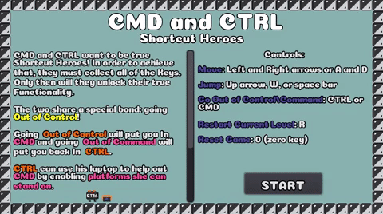

Following up the post I wrote about making a game in one day with this one may seem like a step back, going from 22 to 48 hours.
The difference is there’s no qualification of development time vs actual time passed; this time I didn’t have the luxury of spreading my development over 4 days.
2 days. 48 hours.
That’s all the time I had to think, plan, and develop. Not to mention also eat, sleep, and tend to other normal bodily functions.
It was definitely way more stressful. Especially when Sunday morning rolled around and I still had so many tasks to complete just to release a playable game; let alone a good one.
It was rewarding though; I learned how important it is to spend time coming up with a good idea (I flip-flopped between 3 or 4 ideas in the first few hours), a few more things in Godot and how to use them, and solidified the importance of having someone else playtest.
Would I do it again? Yup.
Would it be just as stressful? Yup.
Would it be worthwhile? Yup.
Might I be turning into a masochist? Possibly. But only about this.
The Game Jam
The GMTK Game Jam is an annual 48 hour long event organized by Mark from Game Maker’s Toolkit, a YouTube channel with videos exploring game design and related topics. The theme for this year’s jam was Out of Control which was fitting as that’s how I felt for the majority of it (having never participated in a real game jam before).
Just before the jam started, there were about 17,000 other people signed up to participate. By the end of it, almost 5,500 entries had been submitted to be played, rated, and overall just admired.
Playing some of the entries, I realized that they were truly stellar and marveled at what knowledgable people could accomplish in such a short time. Was mine good enough to hang with them? It didn’t really matter. I was happy with what I’d made and that I was even able to do it in the same 48 hours.
I was more relieved to know that I wouldn’t be having to do something like it for a long while though.
The (Out of Control) Game
CMD and CTRL: Shortcut Heroes is the game I submitted; a puzzle platforming game where you play as two characters (CMD and CTRL) who must collect the keyboard keys (A, B, C, and O) scattered in each level so that they can become true shortcut heroes.
The main mechanic in the game (and the implementation of the jam’s theme) is the ability to switch between the two characters at any time with either the ctrl or command keys (not to be confused with the playable characters). Doing so will cause you to go out of control (CTRL) and in command (CMD) or out of command (CMD) and in control (CTRL).
They each have a laptop that they can use to enable/disable platforms that only the other can interact with and stand on. Only by using both together will the player be able to finish the level and progress.

The Process (of going Out of Control)
Thankfully I didn’t keep a detailed minute-by-minute development log like the last time so we’ll just cover the important events that occurred (courtesy of the source code repository’s commit history).
Dawn of the First Day (Friday)
The jam officially started at 8pm UK time which meant I began at 3pm. I planned to first work on the idea from 3-5pm; figuring a couple hours would be enough to come up with a few ideas, decide on the best one, and flush it out enough to begin development.
Spoiler: this turned out to not be enough time.
I had come up with a few game mechanics and ideas but nothing that I felt really fit the theme very well. A few of the mehanics I came up with that centered around the theme included:
- removing or modifying the player’s controls (a lot of games went this route)
- fighting to keep control of your character (either against an AI or another player)
- removing the ability to use the
ctrlkey - something involving keyboard shortcuts (e.g.
ctrl+a) and then taking that ability away
As for game ideas:
- fire getting out of control (fire fighting game)
- weather control (playing as mother nature)
- stock trading/market game (was thinking of things that could get out of control)
- out of body/mind control
Ultimately I focused on the following two ideas before deciding to go with the second.
Idea 1: An adventure game based around keyboard shortcuts
I knew that there were a lot of keyboard shortcuts and thought about how I could make use of all or most of them and settled on making each of them a different ability for characters in a D&D-like adventure game. The player would be able to use them at any type by using the associated shortcut.
- the priest would have the ability to
SAVE(CTRL+S) other downed adventurers andREFRESH(CTRL+R) the party to cure them of damage/poison - the rogue would be able to
FIND(CTRL+F) things by searching rooms andOPEN(CTRL+O) locked doors - the paladin would be able to use their sword to
CUT(CTRL+X) objects blocking paths and becomeBOLD(CTRL+B) to sweet talk or influence NPCs
The party would share a collection of ctrls that would decrease by one each time an ability was used. When they run out, the party would black out and start again from the original spawn point but any progress made (new characters recruited or events that happened) would persist. Each time a new character is recruited, the ctrl collections would increase, allowing the party to do more each time before they black out.
I really liked this idea but ultimately didn’t pursue it because I thought it’d take too long to develop different scenarios and multiple paths through them (e.g. defeat the dragon by learning something in a book or by talking to it in Draconic - these would be abilities for different characters).
Idea 2: A different version of CMD and CTRL
The initial idea for CMD and CTRL was still a platformer but with a different mechanic: instead of switching between two characters, the player would be able to create many different versions of CTRL (with CTRL+C and CTRL+V) and control them for a limited amount of time. Similar to the final iteration, the player would still need to use the other versions to hold down switches or stack them to reach higher platforms.
Brainstorming and developing these ideas took until dinnertime (~6:30pm) at which point I took a break to eat while fretting about whether I had a good idea or not and whether this whole thing was even worth it.
I felt a bit defeated.
With some food in my belly, I got down to prototyping out the CMD and CTRL idea as it currently stood and by the end of the evening, I had something working. I was able to implement the copy and paste creation mechanic (up to a set limit of copies) as well as the mechanic to allow switching between those copies.
I felt a little less defeated.
Dawn of the Second Day (Saturday)
Got up and started working again around 7:45 AM. I reviewed the progress I’d made the night before and realized managing all of those extra copies might get complicated quickly so I scrapped it.
I liked the swap mechanic though so I thought about doing it between just two characters. This is when the idea of CMD and CTRL as it was released was cemented: a puzzle platforming game where you swap between two characters to enable platforms that only the other can use.
1:56 PM
I had the groundwork systems in place:
- character swapping
- platforms that were only usable by one character
- platforms that were usable by both
- level transitions
I felt much less defeated; the game was taking shape and I was liking it.
5:33 PM
I implemented the switches that enabled and disabled the character-specific platforms (while dealing with the bugs they brought) and updated the platform tiles to look much less ugly and out of place.
9:44 PM
Accomplished a lot in the four hours following the last milestone:
- created and added all of the keyboard key sprites that the player would need to collect to transition the level (ended up not using them all)
- laid out levels 2 and 3 in their entirety
- added a time counter to show how long the player had been playing the current game and made it only display under the active character
- added functionality to restart the level (time kept counting) and reset the entire game (time started at 0 again)
11:31 PM
By this point I had a pretty bad headache from programming and staring at my computer but I managed to end day two in a very good position:
- updated the platform tiles to actually look good
- added a start screen with instructions that also looked good
- implemented the keyboard item that would stop the game (final item the player has to collect)
- updated the game’s background colour to be something other than the default grey

After almost 16 hours of development, I finished day two no longer feeling defeated but actually accomplished and ready for the final day. I had wanted to create 10 levels but after seeing how long 3 took me to complete, I scaled that down to 5 going into Sunday.
Dawn of the Final Day (Sunday)
I started out even earlier on Sunday (7:00 AM) knowing that I only had until 3pm to get everything finished to some degree of completion and submitted to itch.io.
7:16 AM
To get my confidence up I fixed a few things that had been bothering me from the last few builds:
- the issue with platforms being drawn in front of everything (the time counter and messages above the keyboard keys)
- the issue with both characters displaying the time counter below them when the game started
- the wording of the instructions
- making the
commandkey swap between characters in addition toctrl
10:06 AM
After finishing the fourth level and starting on the fifth, I realized that I wanted to include another layer of depth to the platforms so I decided to add blocks that either character could stand on and enable or disable with their respective laptop.
The twist was that I made them work opposite the normal blocks: if the character stepped onto their laptop it would enable the other character’s blocks but disable the blocks that both could stand on.
I fought with some bugs around this for 40 minutes while implementing it including if one character was on their laptop (hiding the blocks that could be used by both) and the other used theirs, the blocks would be enabled rather than stay disabled.
11:10 AM
Went on Free Music Archive and freesound.org to find some royalty-free music and sounds, trimmed them down a bit, and chuckled at how easy it was to add them into the game with Godot.
1:21 PM
Having just finished laying out the final design of level 5, I started up the game to playtest the most recent changes and realized that a large section of the second half leading to the final item could be skipped entirely.

I thought and stressed about the design for a good half hour while watching the time tick by and finally decided to just let it be. If the player wanted to skip it, there wasn’t much I could do at this point; I just didn’t have the time to invest into a re-design of the level.
1:57 PM
I asked my girlfriend to playtest for me again (she did such a great job with the previous game) despite not really having much time left before the deadline. I heaved a sigh of relief when she got stuck, thought her way through, and progressed through the levels. I updated the layouts based on what I’d observed from her playthrough (adding some blocks to allow quicker attempts in some parts).
She also discovered a platform that was impossible to reach and actually halted the player from progressing further; a truly game-breaking issue fixed because of playtesting!
2:20 PM
Made some final updates to the instructions and fixed a bug around the reset function not working.
Forty minutes before the deadline I managed to create a Windows build and upload it to itch.io.
FIN
I had done it. I created a game in 48 hours. Technically 47 hours, 20 minutes, and 15 seconds but who’s really keeping track.
I pushed some final commits to the git repository, made and uploaded a web version for my website, and put the link on the game’s itch.io page in case the Windows version didn’t work for some reason.
I got up from my desk, did some well needed stretches (they didn’t end up helping the headache I had), and tucked in to some leftover chinese food.
It was done.
Lessons Learned
A lot of the lessons learned this time were actually more lessons reinforced from my first go around.
Spend Time on the Idea
When we have a goal to complete in a limited time, we’re inclined to spend as much time as possible doing things that actually bring us closer to that goal.
Brainstorming ideas and flushing them out doesn’t really fit since they don’t directly contribute to the end goal of a finished game (of course, the idea you actually decide to pursue does). We might then think to only dedicate the most minimal amount of time to it. However, that could actually end up costing us more time down the line when that rushed idea doesn’t end up being good enough and a new one needs to be thought up, flushed out, and developed.
Despite spending three and a half hours on ideas and flushing them out, I wasn’t completely happy with the version of CMD and CTRL until Saturday morning, which meant that Friday evening from about 6:30pm until I went to bed was kind of “wasted” development time as it wasn’t being applied towards the desired version of CMD and CTRL.
In hindsight I probably could have spent more of Friday evening thinking and working on the idea instead of prototyping the entire time (although one of the prototypes did prove somewhat useful).
Playtesting is Super Important
I already discussed my affinity for playtesting so I won’t spend too many more words on it.
The primary reason for playtesting CMD and CTRL was a bit different than the last time: it wasn’t about revealing bugs but rather watching someone else think their way through the puzzles in each level. Seeing where they got stuck, what they tried to do, and how long it took them to solve it.
The puzzles in the game are static; once you’ve solved it, you don’t get stuck on subsequent runs. Watching another person play really showed me whether I had met my goal of making something both fun and challenging.
Godot-specific Learning Points
With practice comes proficiency. I definitely learned more about how to use Godot but this project was more about practicing than learning. A few standout learning points though are below.
- Collision masks: I’d seen them in the UI but wasn’t sure how or why I’d use them. They ended up being the basis of the entire mechanic for blocks that only one or both characters could stand on.
- Position2D: a plain node that can hold a vector position. Used them as the characters spawn points on each level and this allowed me to keep the spawning functionality generic and reusable.
- Area2D: a collision detection node that I ended up using instead of a RigidBody2D (like I did in my previous game) as it allowed me to have the laptop switches be unaffected by the physics.
Final Thoughts
Oof.
It was a lot.
The overly extended idea generation and elaboration time, the feelings of defeat, the headaches, the compromises, the impending deadline.
But also the creativity, the pivots, the grit, the joy of observation, the sense of accomplishment.
It was tough but I did it and the best part is that I have something to show for all my efforts.